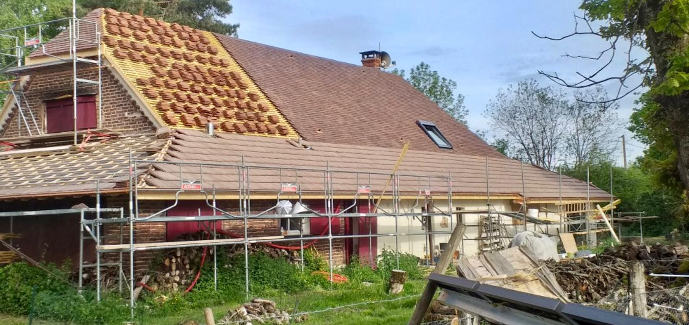

Conseils pour une Couverture
Durable à Montargis

Une couverture bien installée et entretenue est essentielle pour protéger votre maison des intempéries, surtout dans une région comme Montargis où les conditions climatiques peuvent être difficiles. Dans cet article, nos experts de JCD Rénovation vous partagent leurs meilleurs conseils pour garantir la durabilité de votre toiture.
1. Choisissez les bons matériaux de couverture
Le choix des matériaux est crucial pour la longévité de votre toiture. À Montargis, nous recommandons l'utilisation de tuiles en terre cuite ou en ardoise, qui sont à la fois esthétiques et résistantes aux intempéries. Pensez à choisir des matériaux adaptés aux normes locales et capables de résister aux fortes pluies et aux vents violents.
2. Faites vérifier régulièrement votre toiture
Même la toiture la plus solide peut s'user avec le temps. Nous vous conseillons de faire inspecter votre couverture au moins une fois par an par un professionnel. Cela permet de repérer les fissures, tuiles cassées ou infiltrations d'eau avant qu'elles ne deviennent des problèmes majeurs.
3. Optez pour un entretien régulier
Un bon entretien est essentiel pour prolonger la durée de vie de votre couverture. Nettoyez régulièrement les gouttières, enlevez les débris, et effectuez un démoussage de la toiture. Cela évitera l'accumulation d'eau et réduira les risques de fuites.
4. Faites appel à un couvreur expérimenté à Montargis
Pour garantir la qualité de votre couverture, il est important de faire appel à des professionnels qualifiés. Chez JCD Rénovation, nos couvreurs sont expérimentés et connaissent parfaitement les spécificités de la région d'Montargis. Nous offrons des solutions adaptées pour garantir la durabilité de votre toiture.
Mots-clés : couverture durable, conseils toiture, rénovation toiture, entretien toiture, matériaux de couverture, Montargis, JCD Rénovation.